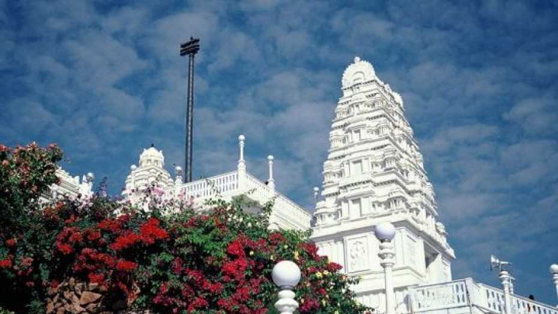
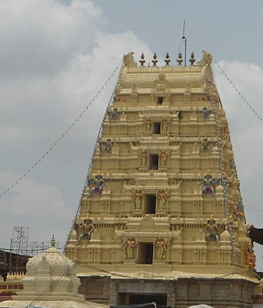
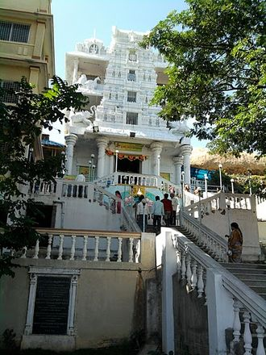

Temples Of Telangana
1. Birla Mandir Dedicated to Lord Venkateshwara, Birla Mandir in Hyderabad is an architectural beauty boasting of 2000 tonnes of white marble. The temple is located on a hilltop at the height of 280 feet which makes the structure look even more incredible. Constructed by the Birla Group (who are popularly known for building temples all over the country), the temple is the ideal place for meditating, given the fact that there are no bells here. There's a bit of climbing involved in reaching this holy site. After entering the place, you get a spectacular panoramic view of Hyderabad and Secunderabad which is worth the climb you take to reach the temple.

2.Gnana Saraswati Temple is a Hindu temple of Goddess Saraswati located on the banks of Godavari River at Basar, Telangana, India.[1] It is one of the two famous Saraswati temples in the Indian subcontinent, the other being Sharada Peeth. Saraswati is the Hindu Goddess of knowledge and learning. Children are brought to the temple for the learning ceremony called as Akshara abyasam.

3.The Sri Sita Ramachandraswamy temple is a South Indian Hindu temple dedicated to Rama, the seventh incarnation of the god Vishnu. It is located on the shores of the Godavari River in the town of Bhadrachalam, a part of the Bhadradri Kothagudem district in Telangana state. Often simply referred to as Bhadrachalam or Bhadradri, the temple is considered one of the Divya Kshetrams of Godavari and is also revered as Dakshina Ayodhya. According to the legend, Vishnu appeared to Meru's son Bhadra as Rama to answer the latter's prayers. However, Vishnu forgot that Rama was a mortal human and appeared as Vaikuntha Rama with four hands. Sita and Lakshmana form part of the temple's moolavar

4.Wargal Saraswati Temple, or Sri Vidya Saraswati Temple, is a Hindu temple located in Siddipet district in Telangana, India. The deity of education in Hinduism is Goddess Saraswati. It is among the few temples of Saraswati in Telangana. It is maintained by the Kanchi Shanker Mutt. Construction of the temple complex was due to the efforts of Yayavaram Chandrashekhara Sharma, a scholar and adherent of Goddess Saraswati. The temple Main Deity. This temple is located on a hillock near Wargal village. On the same hillock are the temples of various other deities, such as:

5.Thousand Pillar temple is located in Hanamkonda part of the Warangal city,dedicated to Shiva, Vishnu and Surya. This famous historic monument was built in a typical Chalukyan style of architecture by King Rudra Deva.The Thousand Pillar Temple or Rudreswara Swamy Temple[1] is a historic Hindu temple located in the town of Hanamakonda, Telangana State, India.[2] It is dedicated to Lord Shiva, Vishnu and Surya. Thousand Pillar Temple, along with Warangal Fort, Kakatiya Kala Thoranam and Ramappa Temple are added to the tentative list of World Heritage sites recognised by UNESCO.[3]